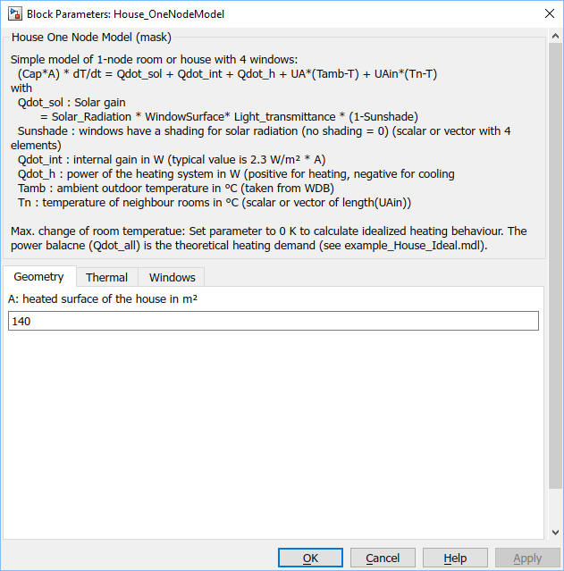

House_OneNodeModel
House_OneNodeModelPath: CARNOT/Basic/ThermalModels
House_OneNodeModel
Path: CARNOT/Basic/ThermalModels
Purpose
Simple and fast one node / one zone model of a house
with 4 ouside walls with windows.
Neighbour building(s)
or room(s) may be modelled by
using the same block or just as a constant temperature zone.
Description
The mathematical description of the house is the differential equation:
(m*cp)house * dThouse / dt = (UA)wall,roof * (Tamb - Thouse) + (UA)ground (Tground - Thouse) + (UA)neighbour (Tneighbour - Thouse)
+ (1 - Sunshade) * [ Gwindow1*Awindow1*Iglb,window1 + Gwindow2*Awindow2*Iglb,window2
+ Gwindow3*Awindow3*Iglb,window3 + Gwindow4*Awindow4*Iglb,window4 ]
+ Qdotvent + Qdotint + Qdotheating
with
Sunshade : Windows have a shading for solar radiation (no shading = 0) - scalar (for all windows) or vector with 4 elements (one for each window)
Qdotint : internal gain in W (typical value is 2.3 W/m² * A)
Qdotheating : power of the heating system in W (positive for heating, negative for cooling )
Qdotvent : ventilation losses, typically Qdotvent = Vhouse * nair * (Tamb - Thouse)
Tamb : ambient outdoor temperature in °C (taken from WDB)
Tn : temperature of neighbour rooms in °C (scalar or vector of length((UA)neighbour))
Solar gains are calculated from the solar radiation on the window surface (Awindow), the energetic solar light transmittance of the glass (Gwindow) and the Sunshade.
The maximum
change of room temperatue
can be limited by a parameter
(see example_House_Ideal.slx).
Set parameter "Max.
change room temperature"
to
:
Parameters and Dialog Box



Characteristics
Direct Feedthrough No
(for the room temperature Troom), Yes (for the power output Qdot_all)
Sample
time
Inherited
from driving block
States
1
Vectorized
No